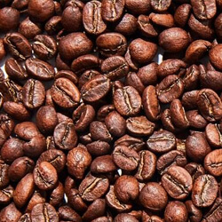
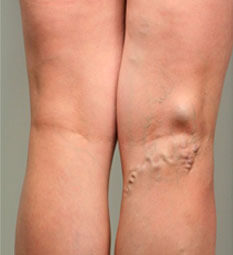

Cada año mueren 2.000.000 de personas a consecuencia de
las venas varicosas. ¡No seas una de ellas!


RESTAURA LAS VENAS A UN ESTADO SALUDABLE
Eficacia probada por los flebólogos de la Academia
de Sanidad de México
Al finalizar el tratamiento con Veniselle los compradores notan:
93%
Reducción de los marcadores
inflamatorios en la sangre
89%
Reducción del tamaño de las venas
97%
Alivio del dolor, la fatiga e
hinchazón
Conocido de

Veniselle
¡Experto en el tratamiento de la enfermedad
venosa!


La salud y belleza de tus
piernas es

La crema Veniselle se basa en las investigaciones de los principales flebólogos de la Academia de la Sanidad de México.
El producto fue sometido a todas las pruebas necesarias, como lo confirman las
patentes y los certificados de la Asociación Internacional de Control de Calidad de
los Medicamentos

En 2019, la OMS se unió a la investigación de una fórmula de crema
revolucionaria. Veniselle fue reconocido como el único producto de acción tópica que funciona en el tratamiento de las enfermedades venosas.
Un curso de tratamiento con la crema devuelve las venas enfermas a su estado saludable, lo que
antes sólo era posible con métodos quirúrgicos.
NO HAY NADA QUE CUIDE LAS VENAS ENFERMAS COMO COMO Veniselle
NADA SUPERFLUO EN LA CREMA Veniselle
0% de componentes sintéticos 0% de antibióticos 0% de hormonas glucocorticoides

Troxerutina
100% de componentes activos
Tiene un poderoso efecto resolutivo y curativo.
Actúa como potenciador, acelerando la penetración
de los componentes activos a la zona afectada.
Al disolver los hematomas, bultos y úlceras,
devuelve a las venas su aspecto original.

Castaño de Indias
Refuerza las paredes y válvulas vasculares, reduce
la viscosidad de la sangre y el riesgo de coágulos

Extracto de flores de manzanilla
Alivia la inflamación, picazón, hinchazón,
desodoriza y suaviza la piel

Extracto de ortiga
Fortalece y tonifica las paredes de los vasos
sanguíneos, reduce las venas varicosas, mejora la circulación sanguínea y elimina la
congestión venosa

Mentol
Enfría y calma la piel, reduce el dolor y alivia la
sensación de pesadez y fatiga en las piernas

Cafeína
Un venotónico natural, hace que la piel sea más
firme y mejora su color
Pantenol
Calma, suaviza y nutre la piel, cura las
microfracturas, normaliza el metabolismo celular, aumenta la fuerza de las fibras de
colágeno

Extracto de pimiento rojo
Estimula una mejor penetración de los ingredientes
activos a través de la piel, mejora la microcirculación, aumenta el tono venoso y
reduce la permeabilidad de los capilares

Extracto de ajenjo
Fortalece los vasos sanguíneos, ayuda a prevenir
los coágulos de sangre y las arañas vasculares en la piel

Laura Aranda Experto en flebología
La insuficiencia venosa es un síndrome clínico causado
por un flujo sanguíneo deficiente. Cuando aparecen las várices, las válvulas de los vasos no se
cierran herméticamente. Como resultado, la sangre drena por las venas hacia las extremidades
inferiores, se estanca y forma bultos y úlceras dolorosas. La cosa empeora. El envenenamiento de
la sangre puede llevar a la amputación y un coágulo de sangre puede llevar a la muerte.
Recomiendo Veniselle a mis pacientes para que eviten estas
consecuencias y se protejan. Esta crema actúa sobre todos los signos de reflujo venoso y mejora
la salud de las venas desde los primeros días de uso.
CÓMO ACTÚA Veniselle
Restaura las venas a un estado saludable en 4
pasos
Elimina la inflamación
Detiene la producción de prostaglandinas en el cuerpo,
sustancias que provocan procesos inflamatorios en las venas varicosas
Alivia el dolor
Al aumentar la permeabilidad de las venas, la crema alivia
los síntomas asociados con las venas varicosas: espasmos y convulsiones
Refuerza
Los componentes activos de la crema refuerzan las paredes
vasculares de las venas. Esto aumenta su tono general y evita que las venas finas se
adhieran a la piel, se obstruyan y se formen trombos
Relaja
Al licuar la linfa y acelerar el flujo sanguíneo, tiene un
efecto antiinflamatorio. Alivia la fatiga y el síndrome de "piernas pesadas"
Conocido de
HAY MUCHAS MANERAS. VÁLIDA SOLO UNA
9 de cada 10 clientes dicen que Veniselle es el mejor
tratamiento para las venas que han probado
Gráfico de los efectos de los diferentes productos
en las venas
Edad
Escala de tiempo en días
35
30
25
20
15
10
5
30
45
60
Terapia
de compresión
de compresión
30
45
60
Medicina
alternativa
alternativa
30
45
60
Métodos
quirúrgicos
quirúrgicos
30
45
60
COMENTARIOS REALES:

Antes

Después


Antes

Después


Antes

Después
Cada año mueren 2.000.000 de personas a consecuencia de
las venas varicosas. ¡No seas una de ellas!

Crema sin venas cortadas
para curar
para prevenir
para aliviar los síntomas fatigas
¡Ordena el BESTSELLER ahora
con descuento del 50%!
¡Rellena el formulario y te devolveremos la llamada para
más detalles en unos minutos!